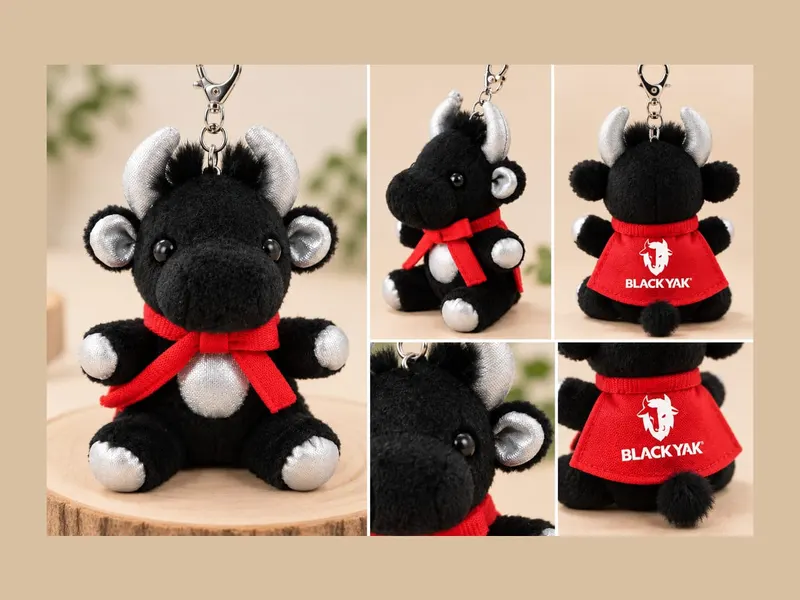
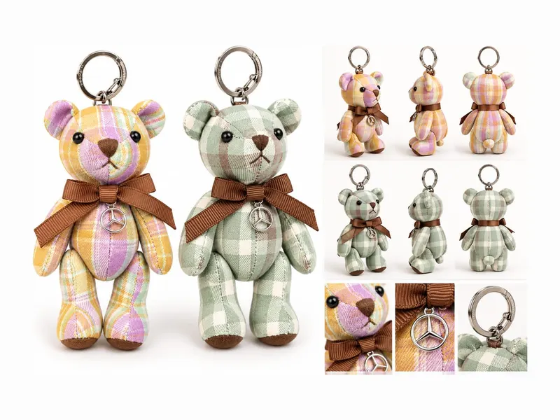
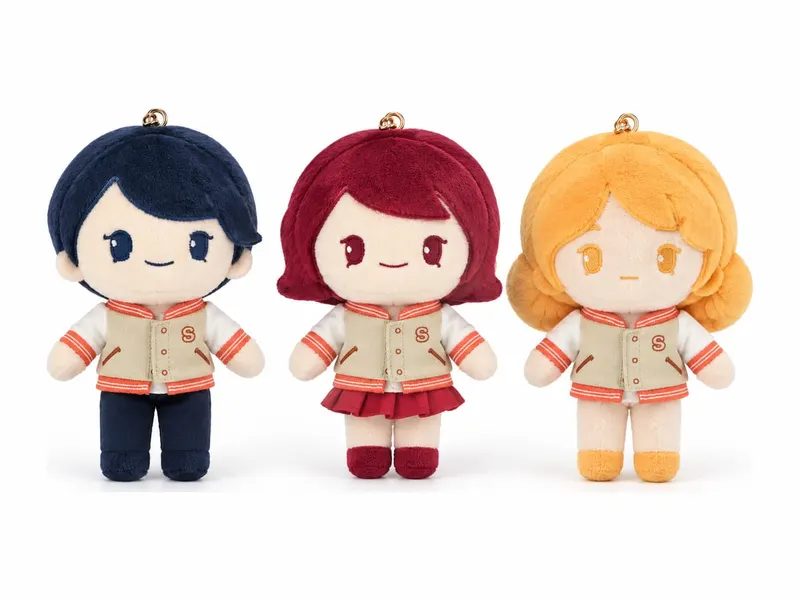
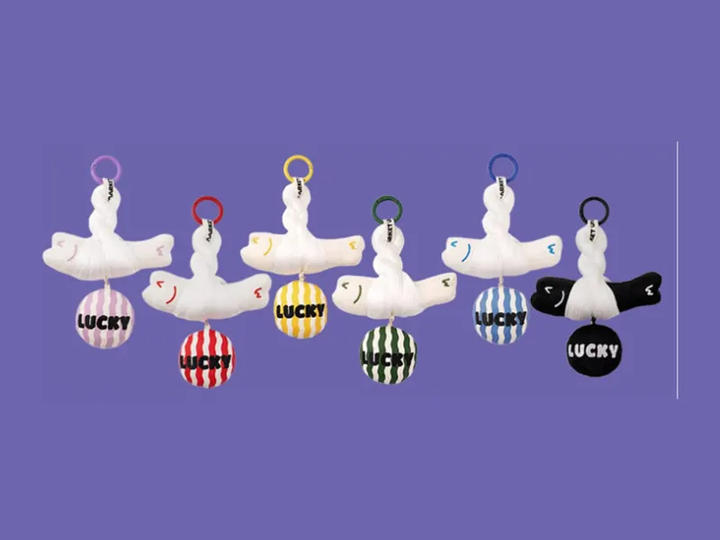
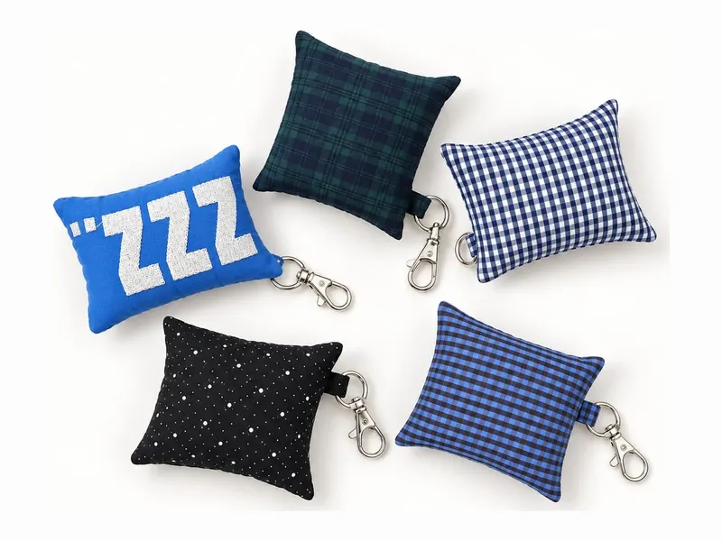

블랙야크
DOLL KEYRING
가방에 거는 작은 인형 키링은 홍보 굿즈와 기념품으로 많이 찾는 품목이에요.
작은 크기에서도 캐릭터가 또렷하게 보이도록 만들고, 고리와 포장까지 맞춰 드려요.
FOR YOU
용도에 맞춰 원단, 크기, 포장까지 함께 정해요.
로고나 브랜드 캐릭터를 담은 판촉물과 기념품이 필요한 기업
캐릭터를 작은 키링으로 만들어 판매하려는 브랜드
입학, 졸업, 축제, 행사 기념품이 필요한 학교와 기관
옷이나 색을 바꾼 여러 종류를 한 번에 만들고 싶은 경우
PORTFOLIO
직접 기획하고 만들어 납품한 결과물입니다.





CASE STUDY
같은 곰 형태를 서로 다른 체크 배색으로 풀어낸 인형 키링입니다. 원단 무늬와 목 리본, 금속 장식이 어우러진 모습을 실제 제작사진으로 살펴보세요.
밝은 다색 체크와 그린 계열 체크를 적용했습니다. 곰의 형태가 같아도 원단의 색과 무늬에 따라 서로 다른 분위기가 드러납니다.
목 부분의 리본과 앞면의 금속 장식, 머리 위의 둥근 고리를 함께 볼 수 있습니다. 인형 본체와 부자재가 어우러지는 모습을 살펴보세요.
사진에는 얼굴 표정부터 옆모습과 뒷모습까지 담겨 있습니다. 인형 키링을 준비할 때 참고할 수 있도록 여러 방향의 모습을 함께 소개합니다.
캐릭터 그림이나 참고사진, 생각하신 크기와 원단 느낌을 알려 주세요. 고리·라벨·포장처럼 함께 구성하고 싶은 부분도 상담할 수 있습니다.
PROCESS
문의 한 번이면, 나머지는 저희가 챙깁니다.
용도, 수량, 예산, 납기를 듣고 맞는 품목을 제안해요.
브랜드에 맞춘 도면과 시안을 만들어 함께 다듬어요.
실물 샘플로 색상과 품질을 먼저 확인해요.
검수 기준에 맞춰 일정대로 생산해요.
원하는 곳까지 포장해서 보내 드려요.
FAQ
궁금한 질문을 누르면 답이 펼쳐져요.
여기에 없는 내용은 상담 신청으로 편하게 물어봐 주세요.
네. 고리 모양과 끈 색, 라벨을 쓰임새에 맞게 함께 정해요.
작게 만들수록 얼굴 표현이 중요해요. 자수와 원단 조각 중 어떤 방법이 더 또렷한지 샘플로 먼저 보여드려요.
네. 같은 인형에 옷이나 색을 바꿔 여러 종류로 만들 수 있어요.
디자인과 종류 수, 수량에 따라 달라요. 처음 제작은 샘플 2주 정도, 샘플 확정 후 양산은 50일 전후, 같은 제품 리오더는 40일 전후가 걸려요. 생각하신 수량과 필요한 날짜를 알려 주시면 맞춰서 안내해 드려요.